Pending review
RU image
Wed
How rules-based trading strategies outperform emotional decisions
Ever feel like your crypto trades are driven more by fear and FOMO than logic? You're not alone. Emotions can be a trader's worst enemy, leading to costly mistakes.
The problem? Emotional trading often means buying high during hype cycles and selling low during panic. This "buy high, sell low" strategy is the opposite of what we aim for.
Rules-based strategies, on the other hand, remove the emotional element. By setting pre-defined rules for entry and exit points, you stick to a plan and avoid impulsive decisions. Think: dollar-cost averaging or grid bots.
BoBe uses these rules-based strategies to automate your crypto trading. Our AI-driven bots execute trades based on your chosen parameters, helping you manage risk and potentially generate USDT yield, without the emotional rollercoaster.
Want to explore automated crypto trading that prioritizes rules over emotion? See how BoBe can help you build a more disciplined portfolio: bobe.app #CryptoTrading #AutomatedTrading #DeFi
The problem? Emotional trading often means buying high during hype cycles and selling low during panic. This "buy high, sell low" strategy is the opposite of what we aim for.
Rules-based strategies, on the other hand, remove the emotional element. By setting pre-defined rules for entry and exit points, you stick to a plan and avoid impulsive decisions. Think: dollar-cost averaging or grid bots.
BoBe uses these rules-based strategies to automate your crypto trading. Our AI-driven bots execute trades based on your chosen parameters, helping you manage risk and potentially generate USDT yield, without the emotional rollercoaster.
Want to explore automated crypto trading that prioritizes rules over emotion? See how BoBe can help you build a more disciplined portfolio: bobe.app #CryptoTrading #AutomatedTrading #DeFi
1011 chars
Бывает, что твои криптосделки больше основаны на страхе и FOMO, чем на логике? Ты не один такой. Эмоции могут быть злейшим врагом трейдера, приводя к дорогостоящим ошибкам.
Проблема? Эмоциональный трейдинг часто означает покупку на хайпе и продажу на панике. Эта стратегия "покупай дорого, продавай дешево" прямо противоположна тому, к чему мы стремимся.
Стратегии, основанные на правилах, наоборот, исключают эмоциональный элемент. Установив заранее определенные правила для точек входа и выхода, ты придерживаешься плана и избегаешь импульсивных решений. Например, усреднение долларовой стоимости (DCA) или grid bot-ы.
BoBe использует эти стратегии, основанные на правилах, для автоматизации твоей криптоторговли. Наши AI-боты совершают сделки на основе выбранных тобой параметров, помогая управлять рисками и потенциально генерировать USDT, без эмоциональных качелей.
Хочешь изучить автоматизированную криптоторговлю, которая ставит правила выше эмоций? Узнай, как BoBe может помочь тебе создать более дисциплинированный портфель: bobe.app #CryptoTrading #AutomatedTrading #DeFi #Крипто #АвтоТрейдинг
Проблема? Эмоциональный трейдинг часто означает покупку на хайпе и продажу на панике. Эта стратегия "покупай дорого, продавай дешево" прямо противоположна тому, к чему мы стремимся.
Стратегии, основанные на правилах, наоборот, исключают эмоциональный элемент. Установив заранее определенные правила для точек входа и выхода, ты придерживаешься плана и избегаешь импульсивных решений. Например, усреднение долларовой стоимости (DCA) или grid bot-ы.
BoBe использует эти стратегии, основанные на правилах, для автоматизации твоей криптоторговли. Наши AI-боты совершают сделки на основе выбранных тобой параметров, помогая управлять рисками и потенциально генерировать USDT, без эмоциональных качелей.
Хочешь изучить автоматизированную криптоторговлю, которая ставит правила выше эмоций? Узнай, как BoBe может помочь тебе создать более дисциплинированный портфель: bobe.app #CryptoTrading #AutomatedTrading #DeFi #Крипто #АвтоТрейдинг
1119 chars
Tired of emotional trading decisions affecting your portfolio?
Rules-based strategies, like those used by BoBe, offer a calmer approach.
* Emotions lead to impulsive buys and sells.
* Algorithms execute pre-defined rules, removing fear and greed.
* This can lead to more consistent results over time.
Ready to trade smarter, not harder?
What are your biggest challenges with emotional trading?
#CryptoTrading #AutomatedTrading #BoBeApp #DeFi
452 chars
Устал от эмоциональных торговых решений, влияющих на твой портфель?
Стратегии, основанные на правилах, такие как те, что используются BoBe, предлагают более спокойный подход.
* Эмоции приводят к импульсивным покупкам и продажам.
* Алгоритмы выполняют заранее определенные правила, исключая страх и жадность.
* Это может привести к более стабильным результатам с течением времени.
Готов торговать умнее, а не усерднее?
Какие у тебя самые большие проблемы с эмоциональным трейдингом?
#CryptoTrading #AutomatedTrading #BoBeApp #DeFi #Крипто #КриптоБот
553 chars
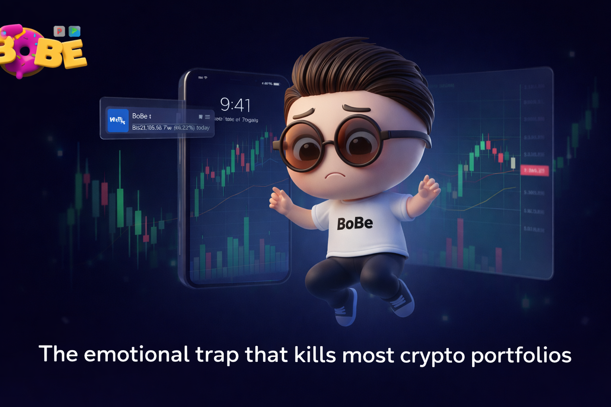
Pending review
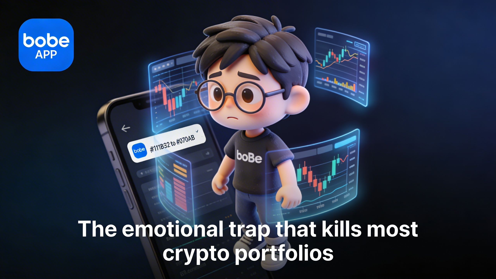
RU image
Fri
The emotional trap that kills most crypto portfolios
Ever felt the urge to panic sell when the market dips, only to watch it recover moments later? You're not alone. Emotional trading decisions are the silent portfolio killer.
Crypto volatility can trigger fear and greed, leading to impulsive buys at highs and desperate sells at lows. This "buy high, sell low" cycle is a surefire way to erode your capital. A solid trading plan is key, but emotions often hijack even the best intentions.
Why is this so common? Our brains are wired to react strongly to potential losses. This survival instinct, while helpful in the wild, can be disastrous in the fast-paced world of crypto trading. Recognizing this bias is the first step to overcoming it.
BoBe offers automated trading strategies like DCA and grid bots, designed to execute your plan unemotionally, 24/7. Take the guesswork and anxiety out of trading. Let the AI do the work, based on pre-set parameters.
Ready to trade smarter, not harder? Explore automated on-chain USDT yield strategies at bobe.app. #DeFi #CryptoTrading #AutomatedTrading #BoBe
Crypto volatility can trigger fear and greed, leading to impulsive buys at highs and desperate sells at lows. This "buy high, sell low" cycle is a surefire way to erode your capital. A solid trading plan is key, but emotions often hijack even the best intentions.
Why is this so common? Our brains are wired to react strongly to potential losses. This survival instinct, while helpful in the wild, can be disastrous in the fast-paced world of crypto trading. Recognizing this bias is the first step to overcoming it.
BoBe offers automated trading strategies like DCA and grid bots, designed to execute your plan unemotionally, 24/7. Take the guesswork and anxiety out of trading. Let the AI do the work, based on pre-set parameters.
Ready to trade smarter, not harder? Explore automated on-chain USDT yield strategies at bobe.app. #DeFi #CryptoTrading #AutomatedTrading #BoBe
1073 chars
Бывало такое, что хотелось в панике продать всё, когда рынок падает, а потом он сразу же отскакивает? Ты не один такой. Эмоциональные решения в трейдинге незаметно убивают портфель.
Волатильность крипты может вызывать страх и жадность, подталкивая к импульсивным покупкам на хаях и отчаянным продажам на лоях. Этот цикл «покупай дорого, продавай дешево» гарантированно съедает твой капитал. Чёткий торговый план важен, но эмоции часто рушат даже самые лучшие намерения.
Почему это так распространено? Наш мозг запрограммирован остро реагировать на потенциальные потери. Этот инстинкт выживания, полезный в дикой природе, может быть катастрофой в быстро меняющемся мире криптотрейдинга. Признание этой предвзятости - первый шаг к её преодолению.
BoBe предлагает автоматизированные торговые стратегии, такие как DCA и grid bot, разработанные для беспристрастного выполнения твоего плана 24/7. Избавься от догадок и беспокойства в трейдинге. Позволь AI работать, основываясь на заданных параметрах.
Готов торговать умнее, а не усерднее? Изучи автоматизированные on-chain стратегии доходности в USDT на bobe.app. #DeFi #CryptoTrading #AutomatedTrading #BoBe #Крипто #АвтоТрейдинг
Волатильность крипты может вызывать страх и жадность, подталкивая к импульсивным покупкам на хаях и отчаянным продажам на лоях. Этот цикл «покупай дорого, продавай дешево» гарантированно съедает твой капитал. Чёткий торговый план важен, но эмоции часто рушат даже самые лучшие намерения.
Почему это так распространено? Наш мозг запрограммирован остро реагировать на потенциальные потери. Этот инстинкт выживания, полезный в дикой природе, может быть катастрофой в быстро меняющемся мире криптотрейдинга. Признание этой предвзятости - первый шаг к её преодолению.
BoBe предлагает автоматизированные торговые стратегии, такие как DCA и grid bot, разработанные для беспристрастного выполнения твоего плана 24/7. Избавься от догадок и беспокойства в трейдинге. Позволь AI работать, основываясь на заданных параметрах.
Готов торговать умнее, а не усерднее? Изучи автоматизированные on-chain стратегии доходности в USDT на bobe.app. #DeFi #CryptoTrading #AutomatedTrading #BoBe #Крипто #АвтоТрейдинг
1191 chars
Crypto's volatility can trigger emotional trading: buying high out of FOMO, selling low out of panic.
It's a common trap, and it empties portfolios.
BoBe offers a solution:
* Automated trading strategies like DCA and grid bots remove emotional decisions.
* Trades execute according to pre-set parameters, not fear or greed.
Transparency and risk management are built in.
What strategies do you use to manage your emotions while trading?
#CryptoTrading #AutomatedTrading #BoBe #DeFi
491 chars
Волатильность крипты может спровоцировать эмоциональный трейдинг: покупать на хаях из-за FOMO, продавать на лоях из-за паники.
Это распространённая ловушка, которая опустошает портфели.
BoBe предлагает решение:
* Автоматизированные торговые стратегии, такие как DCA и grid bot, исключают эмоциональные решения.
* Сделки совершаются в соответствии с заданными параметрами, а не из-за страха или жадности.
Прозрачность и управление рисками встроены.
Какие стратегии вы используете, чтобы управлять своими эмоциями во время торговли?
#CryptoTrading #AutomatedTrading #BoBe #DeFi #Крипто #Доходность
601 chars
Pending review
RU image
Thu
Why users are excited about the new ETH/USDT grid strategy
New ETH/USDT grid strategy is live: Automate your trades and potentially earn USDT yield, even in sideways markets. See how it works on bobe.app. #DeFi #CryptoTrading #BoBeApp
175 chars
Новая grid стратегия ETH/USDT уже доступна! Автоматизируйте свои сделки и, возможно, зарабатывайте USDT, даже на боковом рынке. Узнайте, как это работает, на bobe.app. #DeFi #CryptoTrading #BoBeApp #Крипто #АвтоТрейдинг
Эта стратегия помогает покупать дешевле и продавать дороже в заданном ценовом диапазоне, а также потенциально получать доходность от волатильности ETH. И все это на bobe.app с новым grid ботом. #DeFi #Крипто #АвтоТрейдинг #BoBeApp
Эта стратегия помогает покупать дешевле и продавать дороже в заданном ценовом диапазоне, а также потенциально получать доходность от волатильности ETH. И все это на bobe.app с новым grid ботом. #DeFi #Крипто #АвтоТрейдинг #BoBeApp
454 chars
Excited about BoBe's new ETH/USDT grid strategy? Here's why:
It automates buying low and selling high, within a price range you set.
* Removes emotional trading.
* Aims to profit from ETH's volatility.
* You retain custody of your funds.
Grid trading is a popular strategy, now accessible on-chain with BoBe.
What crypto pairs are you most interested in trading?
#BoBe #CryptoTrading #AutomatedTrading #DeFi
418 chars
В восторге от новой grid стратегии ETH/USDT от BoBe? Вот почему:
Она автоматизирует покупку по низкой цене и продажу по высокой, в пределах установленного вами ценового диапазона.
* Убирает эмоциональную составляющую из торговли.
* Нацелена на получение прибыли от волатильности ETH.
* Вы сохраняете контроль над своими средствами.
Grid trading это популярная стратегия, теперь доступная on-chain с BoBe.
Какими криптопарами вам больше всего интересно торговать?
#BoBe #CryptoTrading #AutomatedTrading #DeFi #Крипто #АвтоТрейдинг #Доходность
546 chars
Pending review
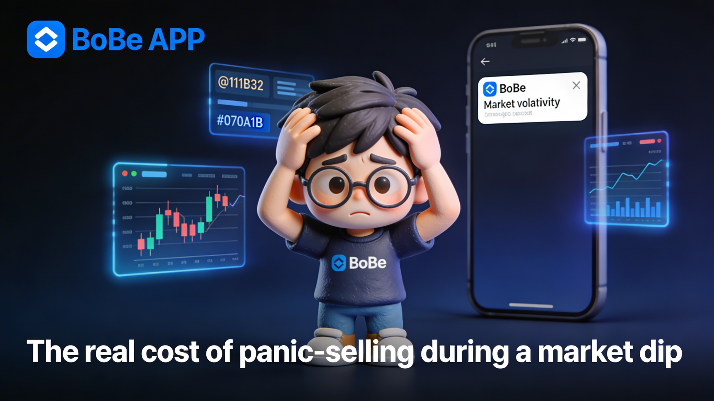
RU image
Mon
The real cost of panic-selling during a market dip
Ever panic-sold during a dip, only to watch the price bounce back? You're not alone. Emotional trading decisions are often the *most* expensive.
Dips are scary, but selling low locks in losses. Many factors drive market volatility, including news events and whale activity. Understanding these can help you avoid knee-jerk reactions.
Instead of reacting emotionally, consider a pre-set strategy. Dollar-Cost Averaging (DCA) for example, buys a fixed amount regularly, regardless of price. This smooths out volatility and can improve your average buy-in.
BoBe automates strategies like DCA and grid bots, taking emotion out of the equation. Set your parameters, and our AI-driven bots work 24/7 to generate USDT yield, even during dips.
Stop letting emotions control your portfolio. Explore automated crypto trading with BoBe and build a more resilient strategy: bobe.app #DeFi #CryptoTrading #AutomatedTrading #BoBeApp
Dips are scary, but selling low locks in losses. Many factors drive market volatility, including news events and whale activity. Understanding these can help you avoid knee-jerk reactions.
Instead of reacting emotionally, consider a pre-set strategy. Dollar-Cost Averaging (DCA) for example, buys a fixed amount regularly, regardless of price. This smooths out volatility and can improve your average buy-in.
BoBe automates strategies like DCA and grid bots, taking emotion out of the equation. Set your parameters, and our AI-driven bots work 24/7 to generate USDT yield, even during dips.
Stop letting emotions control your portfolio. Explore automated crypto trading with BoBe and build a more resilient strategy: bobe.app #DeFi #CryptoTrading #AutomatedTrading #BoBeApp
942 chars
Бывало, продавали в панике на просадке, а потом видели, как цена отскакивает? Вы не одиноки. Эмоциональные торговые решения часто оказываются *самыми* дорогими.
Просадки пугают, но продажа на низах фиксирует убытки. На волатильность рынка влияет множество факторов, включая новости и активность крупных игроков. Понимание этого поможет избежать импульсивных реакций.
Вместо того, чтобы реагировать эмоционально, рассмотрите заранее заданную стратегию. Например, Dollar-Cost Averaging (DCA) предполагает регулярную покупку фиксированной суммы, независимо от цены. Это сглаживает волатильность и может улучшить вашу среднюю цену покупки.
BoBe автоматизирует такие стратегии, как DCA и grid боты, исключая эмоции из уравнения. Установите свои параметры, и наши боты на базе ИИ будут работать 24/7, генерируя доход в USDT, даже во время просадок.
Хватит позволять эмоциям контролировать ваш портфель. Изучите автоматизированную криптоторговлю с BoBe и создайте более устойчивую стратегию: bobe.app #DeFi #CryptoTrading #AutomatedTrading #BoBeApp #Крипто #АвтоТрейдинг
Просадки пугают, но продажа на низах фиксирует убытки. На волатильность рынка влияет множество факторов, включая новости и активность крупных игроков. Понимание этого поможет избежать импульсивных реакций.
Вместо того, чтобы реагировать эмоционально, рассмотрите заранее заданную стратегию. Например, Dollar-Cost Averaging (DCA) предполагает регулярную покупку фиксированной суммы, независимо от цены. Это сглаживает волатильность и может улучшить вашу среднюю цену покупки.
BoBe автоматизирует такие стратегии, как DCA и grid боты, исключая эмоции из уравнения. Установите свои параметры, и наши боты на базе ИИ будут работать 24/7, генерируя доход в USDT, даже во время просадок.
Хватит позволять эмоциям контролировать ваш портфель. Изучите автоматизированную криптоторговлю с BoBe и создайте более устойчивую стратегию: bobe.app #DeFi #CryptoTrading #AutomatedTrading #BoBeApp #Крипто #АвтоТрейдинг
1079 chars
Panic selling: We've all been there.
Seeing red in your portfolio can trigger strong emotions, and selling everything might feel like the only way out.
But ask yourself: What's the *real* cost?
* Locking in losses: You guarantee you won't benefit from any potential rebound.
* Missing the recovery: Often, the biggest gains happen soon after the dip.
* Emotional rollercoaster: Constant reaction leads to more stress.
BoBe's automated strategies, like DCA and grid bots, can help you detach from emotion and stick to a plan.
They keep trading even when you don't want to look at the charts.
What's your strategy for handling market dips?
#CryptoTrading #RiskManagement #BoBeApp #AutomatedTrading
708 chars
Паническая продажа: все мы там были.
Видеть красный цвет в своем портфеле может вызвать сильные эмоции, и продажа всего может показаться единственным выходом.
Но спросите себя: какова *реальная* цена?
* Фиксация убытков: Вы гарантируете, что не получите выгоды от возможного восстановления.
* Упущенная выгода от восстановления: Часто наибольшая прибыль происходит вскоре после падения.
* Эмоциональные качели: Постоянная реакция приводит к большему стрессу.
Автоматизированные стратегии BoBe, такие как DCA и grid боты, могут помочь вам отстраниться от эмоций и придерживаться плана.
Они продолжают торговать, даже когда вы не хотите смотреть на графики.
Какая у вас стратегия для работы с просадками рынка?
#CryptoTrading #RiskManagement #BoBeApp #AutomatedTrading #Крипто #АвтоТрейдинг #Доходность #КриптоБот
818 chars
Pending review
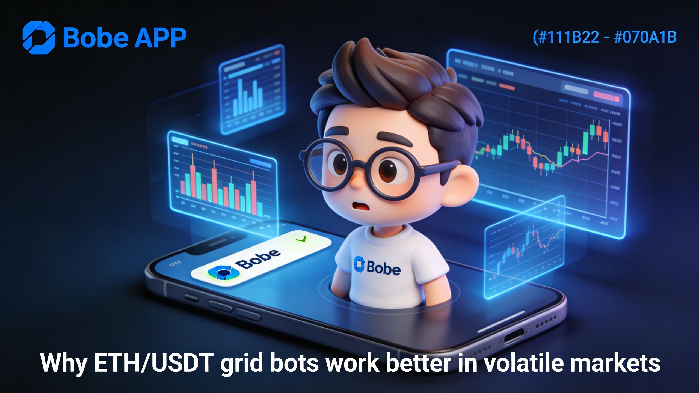
RU image
Fri
Why ETH/USDT grid bots work better in volatile markets
Volatile markets got you down? ETH/USDT grid bots thrive on the swings, automatically buying low & selling high. Learn how BoBe can automate your trading strategy: bobe.app #CryptoTrading #TradingBot #BoBeApp
208 chars
Устали от волатильности рынка? ETH/USDT grid боты процветают на колебаниях, автоматически покупая дешево и продавая дорого. Узнайте, как BoBe может автоматизировать вашу торговую стратегию: bobe.app #CryptoTrading #TradingBot #BoBeApp #Крипто #АвтоТрейдинг
Волатильные рынки как раз то, что нужно grid ботам ETH/USDT! Они не боятся колебаний цен, а используют их для получения прибыли, покупая на низах и продавая на пиках. BoBe помогает автоматизировать этот процесс. Больше инфо на bobe.app #CryptoTrading #TradingBot #BoBeApp #Крипто
Волатильные рынки как раз то, что нужно grid ботам ETH/USDT! Они не боятся колебаний цен, а используют их для получения прибыли, покупая на низах и продавая на пиках. BoBe помогает автоматизировать этот процесс. Больше инфо на bobe.app #CryptoTrading #TradingBot #BoBeApp #Крипто
540 chars
Why ETH/USDT grid bots shine in volatile markets:
Price swings trigger more buy/sell orders within your set range, meaning more opportunities to capture profits.
Think of it like this:
* Volatility = more action
* More action = more trades
* More trades = more potential yield
BoBe’s grid bots automate this process, taking the emotion out of trading.
What's your favorite strategy for handling ETH volatility?
#CryptoTrading #TradingBot #AutomatedTrading #BoBe
473 chars
Почему ETH/USDT grid боты так хороши на волатильных рынках:
Колебания цен активируют больше ордеров на покупку/продажу в установленном вами диапазоне, а это значит, что появляется больше возможностей для получения прибыли.
Представьте себе это так:
* Волатильность = больше движений
* Больше движений = больше сделок
* Больше сделок = больше потенциальной прибыли
Grid боты BoBe автоматизируют этот процесс, избавляя вас от эмоций в торговле.
Какая у вас любимая стратегия для работы с волатильностью ETH?
#CryptoTrading #TradingBot #AutomatedTrading #BoBe #КриптоБот
573 chars
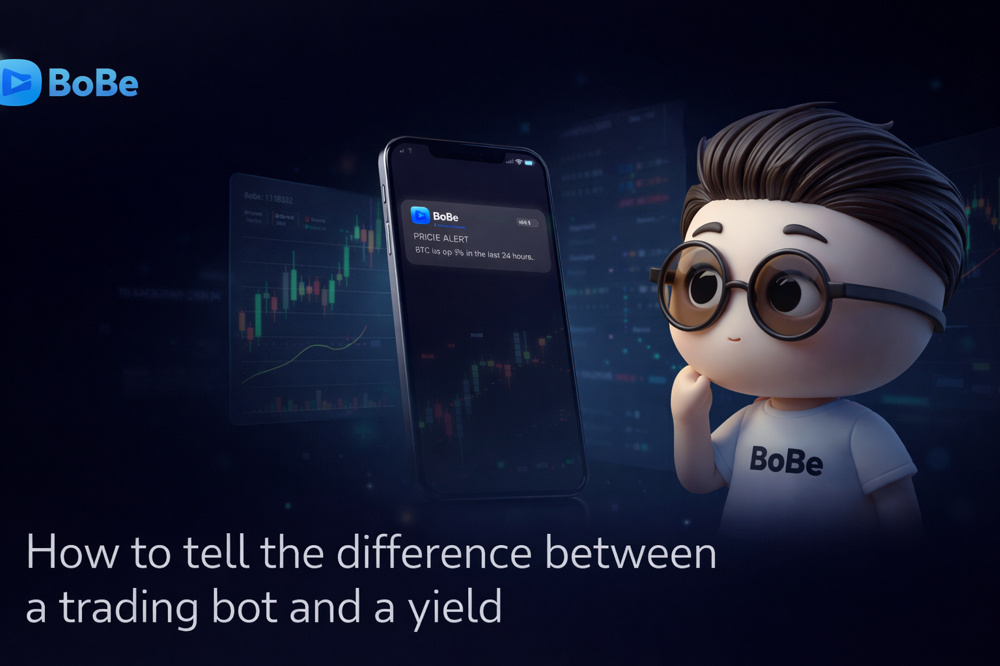
Pending review
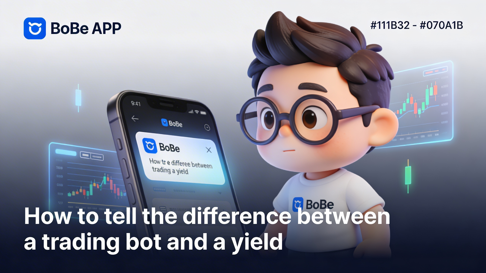
RU image
Thu
How to tell the difference between a trading bot and a yield scam
Tired of "passive income" platforms that vanish overnight, leaving you holding the bag? Spotting the difference between a real trading bot and a yield scam is crucial. Here's how.
First: understand the tech. Legitimate trading bots automate strategies like DCA or grid trading on exchanges. Scams often promise impossibly high, fixed returns with vague explanations of how they generate yield. If it sounds too good to be true, it probably is.
Next, look for transparency. Real trading platforms show you the bot's performance, trading history, and the underlying strategy. Shady platforms hide these details, operating like a black box. Auditability is key in DeFi.
At BoBe, we prioritize transparency. Our AI-driven bots execute well-defined, on-chain strategies you can track. You see exactly how your USDT yield is generated, with clear risk parameters. No black boxes, just automation.
Ready to try automated trading with a platform you can trust? Explore BoBe's AI-driven strategies at bobe.app. #DeFi #CryptoTrading #AutomatedTrading #BoBeApp
First: understand the tech. Legitimate trading bots automate strategies like DCA or grid trading on exchanges. Scams often promise impossibly high, fixed returns with vague explanations of how they generate yield. If it sounds too good to be true, it probably is.
Next, look for transparency. Real trading platforms show you the bot's performance, trading history, and the underlying strategy. Shady platforms hide these details, operating like a black box. Auditability is key in DeFi.
At BoBe, we prioritize transparency. Our AI-driven bots execute well-defined, on-chain strategies you can track. You see exactly how your USDT yield is generated, with clear risk parameters. No black boxes, just automation.
Ready to try automated trading with a platform you can trust? Explore BoBe's AI-driven strategies at bobe.app. #DeFi #CryptoTrading #AutomatedTrading #BoBeApp
1073 chars
Устали от платформ "пассивного дохода", которые исчезают в одночасье, оставляя вас ни с чем? Важно уметь отличать настоящего торгового бота от скам-проекта, обещающего высокую доходность. Вот как это сделать.
Во-первых, разберитесь в технологиях. Легитимные торговые боты автоматизируют стратегии, такие как DCA или grid trading, на биржах. Скамы часто обещают невероятно высокие, фиксированные доходы, без четкого объяснения, как они генерируют доходность. Если это звучит слишком хорошо, чтобы быть правдой, скорее всего, так оно и есть.
Далее, обращайте внимание на прозрачность. Реальные торговые платформы показывают вам результаты работы бота, историю торгов и лежащую в основе стратегию. Сомнительные платформы скрывают эти детали, действуя как черный ящик. Аудит имеет решающее значение в DeFi.
В BoBe мы уделяем приоритетное внимание прозрачности. Наши AI-driven боты выполняют четко определенные on-chain стратегии, которые вы можете отслеживать. Вы видите, как именно генерируется ваша доходность в USDT, с четкими параметрами риска. Никаких черных ящиков, просто автоматизация.
Готовы попробовать автоматизированную торговлю с платформой, которой можно доверять? Изучите AI-driven стратегии BoBe на bobe.app. #DeFi #CryptoTrading #AutomatedTrading #BoBeApp #Крипто #АвтоТрейдинг
Во-первых, разберитесь в технологиях. Легитимные торговые боты автоматизируют стратегии, такие как DCA или grid trading, на биржах. Скамы часто обещают невероятно высокие, фиксированные доходы, без четкого объяснения, как они генерируют доходность. Если это звучит слишком хорошо, чтобы быть правдой, скорее всего, так оно и есть.
Далее, обращайте внимание на прозрачность. Реальные торговые платформы показывают вам результаты работы бота, историю торгов и лежащую в основе стратегию. Сомнительные платформы скрывают эти детали, действуя как черный ящик. Аудит имеет решающее значение в DeFi.
В BoBe мы уделяем приоритетное внимание прозрачности. Наши AI-driven боты выполняют четко определенные on-chain стратегии, которые вы можете отслеживать. Вы видите, как именно генерируется ваша доходность в USDT, с четкими параметрами риска. Никаких черных ящиков, просто автоматизация.
Готовы попробовать автоматизированную торговлю с платформой, которой можно доверять? Изучите AI-driven стратегии BoBe на bobe.app. #DeFi #CryptoTrading #AutomatedTrading #BoBeApp #Крипто #АвтоТрейдинг
1306 chars
Spot a yield scam, not a trading bot. It's crucial to know the difference:
* **Transparency:** Real bots show you the trades. Scams hide them.
* **Control:** With a bot, your funds stay in your account. Scams often require you to deposit funds into *their* platform.
* **Source Code:** Open-source bots are auditable. Scams are black boxes.
BoBe automates your crypto trading strategy on-chain. No blind faith, just transparent execution.
What factors do *you* consider when evaluating a crypto project?
#CryptoTrading #TradingBot #DeFi #BoBeApp
555 chars
Как отличить скам-проект, обещающий доходность, от торгового бота? Важно понимать разницу:
* **Прозрачность:** Настоящие боты показывают вам сделки. Скамы их скрывают.
* **Контроль:** С ботом ваши средства остаются на вашем счету. Скамы часто требуют, чтобы вы внесли средства на *их* платформу.
* **Исходный код:** Боты с открытым исходным кодом можно проверить. Скамы это черные ящики.
BoBe автоматизирует вашу стратегию криптотрейдинга on-chain. Никакой слепой веры, только прозрачное исполнение.
Какие факторы *вы* учитываете при оценке криптопроекта?
#CryptoTrading #TradingBot #DeFi #BoBeApp #КриптоБот #Доходность
630 chars
Pending review
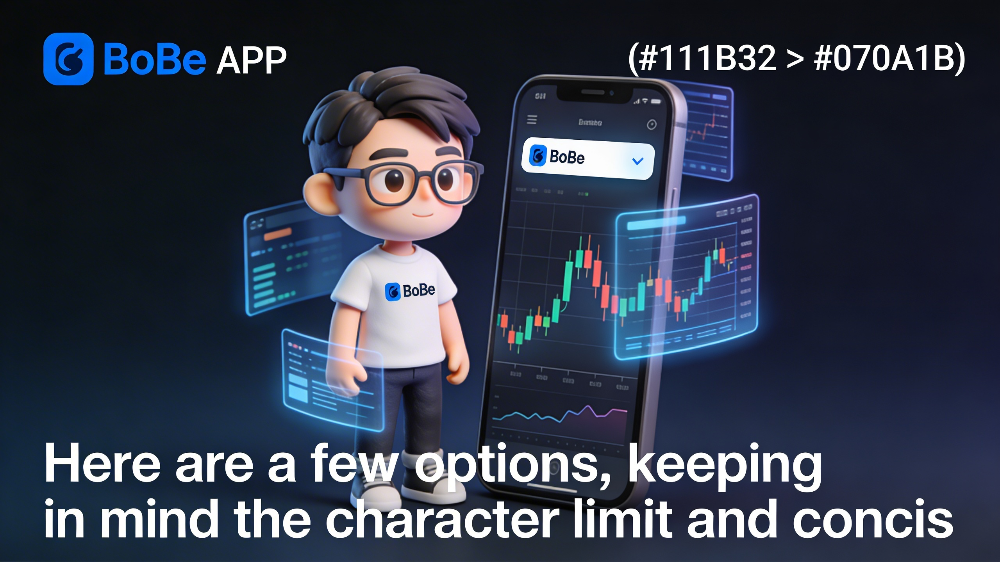
RU image
Sat
Every BoBe trade is on-chain. Here's how to verify it yourself.
Tired of black-box crypto trading? Wondering if your trades are *actually* happening? You deserve transparency. Here's how to verify every BoBe trade, directly on the blockchain.
First, grab the transaction hash (TxHash) from your BoBe trade history. This unique identifier is like a receipt for your trade. Then, head over to a blockchain explorer like Etherscan or Polygonscan. Paste your TxHash into the search bar.
The explorer will show you all the details: which tokens were traded, the amounts involved, the smart contract that executed the trade, and the exact time it happened. It's all there, immutable and verifiable.
BoBe believes in radical transparency. By making every trade on-chain, you have full visibility and control. No more trusting, verify instead.
Ready to experience transparent, automated crypto trading? Explore BoBe's AI-powered strategies and see your trades on-chain: bobe.app #DeFi #CryptoTrading #AutomatedTrading #BoBe
First, grab the transaction hash (TxHash) from your BoBe trade history. This unique identifier is like a receipt for your trade. Then, head over to a blockchain explorer like Etherscan or Polygonscan. Paste your TxHash into the search bar.
The explorer will show you all the details: which tokens were traded, the amounts involved, the smart contract that executed the trade, and the exact time it happened. It's all there, immutable and verifiable.
BoBe believes in radical transparency. By making every trade on-chain, you have full visibility and control. No more trusting, verify instead.
Ready to experience transparent, automated crypto trading? Explore BoBe's AI-powered strategies and see your trades on-chain: bobe.app #DeFi #CryptoTrading #AutomatedTrading #BoBe
968 chars
Устали от крипто-торговли вслепую? Задумываетесь, действительно ли ваши сделки совершаются? Вы заслуживаете прозрачности. Вот как проверить каждую сделку BoBe прямо в блокчейне.
Сначала возьмите хеш транзакции (TxHash) из истории ваших сделок BoBe. Этот уникальный идентификатор похож на квитанцию о вашей сделке. Затем перейдите к обозревателю блокчейна, например, Etherscan или Polygonscan. Вставьте свой TxHash в строку поиска.
Обозреватель покажет вам все детали: какие токены были проданы, задействованные суммы, смарт-контракт, который выполнил сделку, и точное время ее совершения. Все там, неизменно и проверяемо.
BoBe верит в радикальную прозрачность. Благодаря тому, что каждая сделка совершается в блокчейне, у вас есть полная видимость и контроль. Больше не нужно доверять, проверяйте.
Готовы ощутить прозрачную, автоматизированную крипто-торговлю? Изучите стратегии BoBe на основе искусственного интеллекта и смотрите свои сделки в блокчейне: bobe.app #DeFi #CryptoTrading #AutomatedTrading #BoBe #Крипто #АвтоТрейдинг
Сначала возьмите хеш транзакции (TxHash) из истории ваших сделок BoBe. Этот уникальный идентификатор похож на квитанцию о вашей сделке. Затем перейдите к обозревателю блокчейна, например, Etherscan или Polygonscan. Вставьте свой TxHash в строку поиска.
Обозреватель покажет вам все детали: какие токены были проданы, задействованные суммы, смарт-контракт, который выполнил сделку, и точное время ее совершения. Все там, неизменно и проверяемо.
BoBe верит в радикальную прозрачность. Благодаря тому, что каждая сделка совершается в блокчейне, у вас есть полная видимость и контроль. Больше не нужно доверять, проверяйте.
Готовы ощутить прозрачную, автоматизированную крипто-торговлю? Изучите стратегии BoBe на основе искусственного интеллекта и смотрите свои сделки в блокчейне: bobe.app #DeFi #CryptoTrading #AutomatedTrading #BoBe #Крипто #АвтоТрейдинг
1048 chars
Want to double-check BoBe's trades? You can.
Every trade is executed on-chain for complete transparency.
Here's how to verify:
* Find the transaction hash (TxHash) in your BoBe trade history.
* Paste it into a blockchain explorer like Etherscan or Polygonscan.
* Review the transaction details, confirming the swap and amounts.
Transparency is key.
What blockchain explorers do you use?
#DeFi #CryptoTrading #AutomatedTrading #BoBeApp
446 chars
Хотите перепроверить сделки BoBe? Вы можете это сделать.
Каждая сделка выполняется в блокчейне для полной прозрачности.
Вот как проверить:
* Найдите хеш транзакции (TxHash) в истории своих сделок BoBe.
* Вставьте его в обозреватель блокчейна, например, Etherscan или Polygonscan.
* Просмотрите детали транзакции, подтверждая обмен и суммы.
Прозрачность это главное.
Какие обозреватели блокчейна вы используете?
#DeFi #CryptoTrading #AutomatedTrading #BoBeApp #Крипто #Прозрачность
492 chars
Pending review
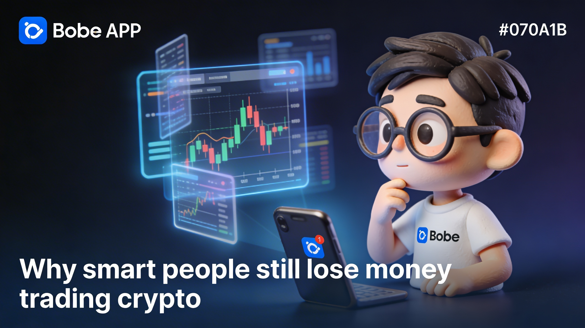
RU image
Mon
Why smart people still lose money trading crypto
Ever wonder why experienced traders still lose money in crypto? It's not always about knowledge, it's often about psychology. Even the smartest minds are vulnerable to emotional decisions when money's on the line.
Fear and greed are powerful motivators. Watching prices surge can trigger FOMO, leading to impulsive buys at market tops. Conversely, panic selling during dips locks in losses, driven by fear of further decline.
Market volatility amplifies these emotions. 24/7 trading means constant price fluctuations, creating a relentless cycle of anxiety and excitement. Staying rational in that environment is incredibly difficult, even for pros.
BoBe helps remove emotion from the equation. Our automated strategies, like DCA and grid bots, execute pre-set plans, regardless of market swings. Trade smarter, not harder.
Ready to trade without the emotional rollercoaster? Explore automated crypto strategies on bobe.app and take control of your portfolio. #CryptoTrading #AutomatedTrading #BoBe
Fear and greed are powerful motivators. Watching prices surge can trigger FOMO, leading to impulsive buys at market tops. Conversely, panic selling during dips locks in losses, driven by fear of further decline.
Market volatility amplifies these emotions. 24/7 trading means constant price fluctuations, creating a relentless cycle of anxiety and excitement. Staying rational in that environment is incredibly difficult, even for pros.
BoBe helps remove emotion from the equation. Our automated strategies, like DCA and grid bots, execute pre-set plans, regardless of market swings. Trade smarter, not harder.
Ready to trade without the emotional rollercoaster? Explore automated crypto strategies on bobe.app and take control of your portfolio. #CryptoTrading #AutomatedTrading #BoBe
1022 chars
Задумывались, почему даже опытные трейдеры теряют деньги в крипте? Дело не всегда в знаниях, часто дело в психологии. Даже самые умные подвержены эмоциональным решениям, когда на кону деньги.
Страх и жадность , мощные мотиваторы. Рост цен может вызвать FOMO (синдром упущенной выгоды), подталкивая к импульсивным покупкам на вершине рынка. И наоборот, паническая продажа во время падений фиксирует убытки из-за страха дальнейшего снижения.
Волатильность рынка усиливает эти эмоции. Круглосуточная торговля означает постоянные колебания цен, создавая непрерывный цикл тревоги и возбуждения. Сохранять рациональность в такой среде невероятно сложно, даже для профессионалов.
BoBe помогает исключить эмоции из уравнения. Наши автоматизированные стратегии, такие как DCA и grid боты, выполняют заранее заданные планы, независимо от колебаний рынка. Торгуйте умнее, а не усерднее.
Готовы торговать без эмоциональных горок? Изучите автоматизированные крипто-стратегии на bobe.app и возьмите под контроль свой портфель. #CryptoTrading #AutomatedTrading #BoBe #Крипто #АвтоТрейдинг
Страх и жадность , мощные мотиваторы. Рост цен может вызвать FOMO (синдром упущенной выгоды), подталкивая к импульсивным покупкам на вершине рынка. И наоборот, паническая продажа во время падений фиксирует убытки из-за страха дальнейшего снижения.
Волатильность рынка усиливает эти эмоции. Круглосуточная торговля означает постоянные колебания цен, создавая непрерывный цикл тревоги и возбуждения. Сохранять рациональность в такой среде невероятно сложно, даже для профессионалов.
BoBe помогает исключить эмоции из уравнения. Наши автоматизированные стратегии, такие как DCA и grid боты, выполняют заранее заданные планы, независимо от колебаний рынка. Торгуйте умнее, а не усерднее.
Готовы торговать без эмоциональных горок? Изучите автоматизированные крипто-стратегии на bobe.app и возьмите под контроль свой портфель. #CryptoTrading #AutomatedTrading #BoBe #Крипто #АвтоТрейдинг
1089 chars
Even smart traders lose money in crypto, here's why:
* Emotions cloud judgment, leading to impulsive buys/sells.
* Chasing pumps rarely ends well.
* Markets can stay irrational longer than you can stay solvent.
Automation helps remove emotion and implement disciplined strategies.
What's one trading mistake you've learned from?
#CryptoTrading #BoBe #AutomatedTrading #DeFi
383 chars
Даже опытные трейдеры теряют деньги в крипте, вот почему:
* Эмоции затуманивают суждения, приводя к импульсивным покупкам/продажам.
* Погоня за пампами редко заканчивается хорошо.
* Рынки могут оставаться иррациональными дольше, чем вы сможете оставаться платежеспособными.
Автоматизация помогает исключить эмоции и внедрять дисциплинированные стратегии, такие как DCA и grid bot стратегии.
Какой урок вы извлекли из своих ошибок в трейдинге?
#CryptoTrading #BoBe #AutomatedTrading #DeFi #Крипто #АвтоТрейдинг
519 chars
Pending review
RU image
Mon
Introducing BoBe's new ETH/USDT grid bot
New ETH/USDT grid bot is live on BoBe! Automate your trades and earn yield while you sleep. Manage your risk, trade with confidence: bobe.app #CryptoTrading #TradingBot #BoBeApp
177 chars
Новый grid bot ETH/USDT уже доступен на BoBe! Автоматизируйте свою торговлю и получайте доход, пока спите. Управляйте рисками и торгуйте уверенно: bobe.app #CryptoTrading #TradingBot #BoBeApp #Крипто #АвтоТрейдинг
213 chars
Excited to announce our newest trading bot, an ETH/USDT grid bot!
Grid bots automate buying and selling within a specific price range, placing buy orders as the price dips and sell orders as it rises.
Here's what it offers:
* Automated trading, 24/7
* Ideal for sideways or range-bound markets
* Helps manage risk by pre-setting buy/sell points
Ready to automate your ETH trading?
What crypto pair would you like to see a grid bot for next?
#BoBe #CryptoTrading #TradingBot #AutomatedTrading
503 chars
Рады представить нашего нового торгового бота: grid bot ETH/USDT!
Grid bots автоматизируют покупку и продажу в определенном ценовом диапазоне, размещая ордера на покупку при снижении цены и ордера на продажу при ее повышении.
Что он предлагает:
* Автоматическая торговля, 24/7
* Идеально подходит для боковых рынков или рынков с ограниченным диапазоном
* Помогает управлять рисками, заранее устанавливая точки покупки/продажи
Готовы автоматизировать свою торговлю ETH?
Для какой криптопары вы хотели бы видеть grid bot в следующий раз?
#BoBe #CryptoTrading #TradingBot #AutomatedTrading #Крипто #КриптоБот
611 chars
Pending review
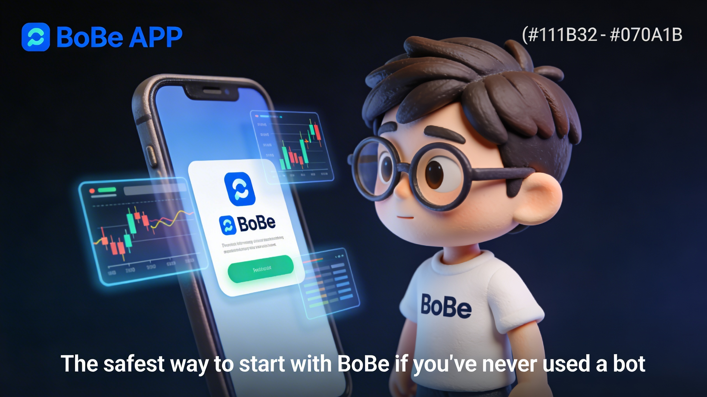
RU image
Sun
The safest way to start with BoBe if you've never used a bot
Chasing pumps and dumps, only to get rekt? Trading bots can help remove emotion, but jumping in can feel risky. Where do you even start?
First: understand the bot's strategy. Is it DCA, grid trading, or something else? Each strategy performs differently in various market conditions. Don't just blindly trust; understand the mechanics.
Second: start small. Allocate a *tiny* percentage of your portfolio to test the waters. Treat it like an experiment, not a get-rich-quick scheme. Monitor performance, adjust parameters if needed, and learn as you go.
BoBe's designed for this: accessible automation with built-in risk management. Our platform lets you easily set up and test strategies with as little as $50 USDT, so you can learn without risking a fortune.
Ready to dip your toes into automated trading? Start small, learn as you go, and take control of your crypto journey with BoBe.app. #DeFi #CryptoTrading #TradingBot #BoBe
First: understand the bot's strategy. Is it DCA, grid trading, or something else? Each strategy performs differently in various market conditions. Don't just blindly trust; understand the mechanics.
Second: start small. Allocate a *tiny* percentage of your portfolio to test the waters. Treat it like an experiment, not a get-rich-quick scheme. Monitor performance, adjust parameters if needed, and learn as you go.
BoBe's designed for this: accessible automation with built-in risk management. Our platform lets you easily set up and test strategies with as little as $50 USDT, so you can learn without risking a fortune.
Ready to dip your toes into automated trading? Start small, learn as you go, and take control of your crypto journey with BoBe.app. #DeFi #CryptoTrading #TradingBot #BoBe
954 chars
Устал гоняться за пампами и дампами и терять деньги? Торговые боты помогают убрать эмоции из торговли, но с чего начать, если страшно?
Во-первых, разберись в стратегии бота. Это DCA, grid-торговля или что-то другое? Каждая стратегия работает по-разному в разных рыночных условиях. Не доверяй слепо, а пойми механику работы.
Во-вторых, начни с малого. Выдели *крошечный* процент своего портфеля, чтобы протестировать воду. Относись к этому как к эксперименту, а не как к схеме быстрого обогащения. Следи за результатами, настраивай параметры, если нужно, и учись по ходу дела.
BoBe создан именно для этого: доступная автоматизация со встроенным управлением рисками. Наша платформа позволяет легко настраивать и тестировать стратегии, начиная всего с 50 USDT, чтобы ты мог учиться, не рискуя целым состоянием.
Готов попробовать автоматизированную торговлю? Начни с малого, учись по ходу дела и возьми под контроль свой путь в мире криптовалют с BoBe.app. #DeFi #CryptoTrading #TradingBot #BoBe #Крипто #АвтоТрейдинг
Во-первых, разберись в стратегии бота. Это DCA, grid-торговля или что-то другое? Каждая стратегия работает по-разному в разных рыночных условиях. Не доверяй слепо, а пойми механику работы.
Во-вторых, начни с малого. Выдели *крошечный* процент своего портфеля, чтобы протестировать воду. Относись к этому как к эксперименту, а не как к схеме быстрого обогащения. Следи за результатами, настраивай параметры, если нужно, и учись по ходу дела.
BoBe создан именно для этого: доступная автоматизация со встроенным управлением рисками. Наша платформа позволяет легко настраивать и тестировать стратегии, начиная всего с 50 USDT, чтобы ты мог учиться, не рискуя целым состоянием.
Готов попробовать автоматизированную торговлю? Начни с малого, учись по ходу дела и возьми под контроль свой путь в мире криптовалют с BoBe.app. #DeFi #CryptoTrading #TradingBot #BoBe #Крипто #АвтоТрейдинг
1033 chars
New to automated crypto trading? Here's the safest way to start with BoBe:
* Begin with a small amount: Get comfortable without risking too much.
* Use our DCA bot: Dollar-Cost Averaging is a lower-risk strategy. It buys at regular intervals.
* Set conservative parameters: Start with wider price ranges and lower investment amounts.
Transparency is key: Monitor your bot's performance daily. Understand the trades it's making.
What are your biggest concerns about using trading bots?
#BoBe #CryptoTrading #AutomatedTrading #DeFi
539 chars
Новичок в автоматизированной крипто-торговле? Вот самый безопасный способ начать с BoBe:
* Начни с небольших сумм: чтобы освоиться, не рискуя большими деньгами.
* Используй нашего DCA-бота: усреднение долларовой стоимости (Dollar-Cost Averaging, DCA) - это стратегия с более низким риском. Он покупает через регулярные промежутки времени.
* Установи консервативные параметры: начни с более широких ценовых диапазонов и меньших сумм инвестиций.
Прозрачность очень важна: ежедневно следи за работой своего бота. Разберись, какие сделки он совершает.
Какие у вас самые большие опасения по поводу использования торговых ботов?
#BoBe #CryptoTrading #AutomatedTrading #DeFi #КриптоБот
682 chars
Pending review
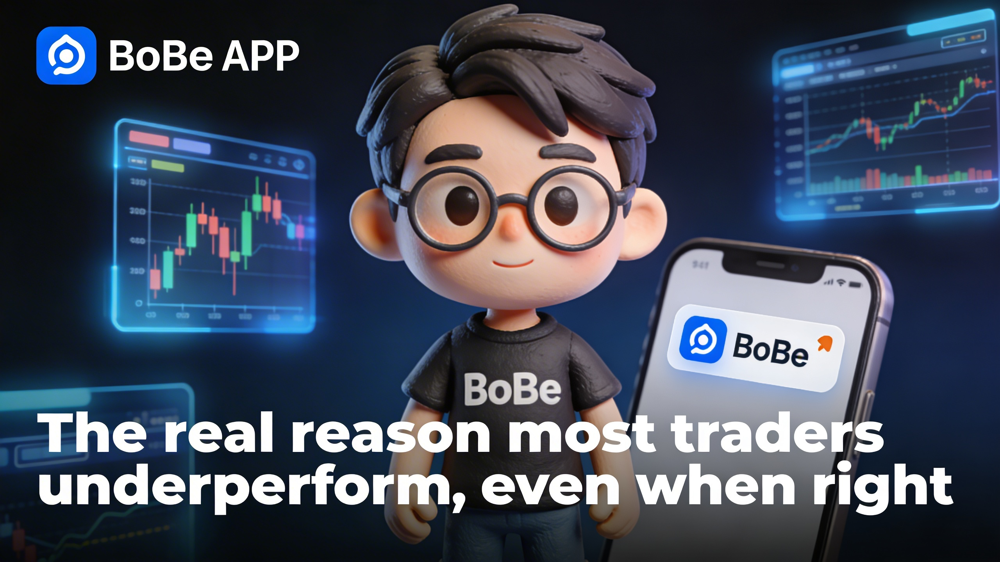
RU image
Tue
The real reason most traders underperform, even when right
Ever nailed the market direction, only to STILL lose money? You're not alone. Knowing *what* to trade is only half the battle. The real problem?
It's execution. Specifically, emotional execution. Fear makes you sell too early, greed makes you hold too long. Result: sub-optimal entries, panic sells, missed profits. Your brain is fighting against you.
Think about it: Hours spent researching, perfect TA, solid fundamentals. Then a red candle triggers FUD. You override your plan, and the market reverses immediately. Sound familiar? It's a classic story.
BoBe helps solve this. Our automated strategies, like DCA and grid bots, execute your plan unemotionally, 24/7. No more FOMO, no more panic. Just consistent, rules-based trading.
Stop letting emotions wreck your trades. Explore automated crypto trading with BoBe and take control. Learn more at bobe.app #CryptoTrading #AutomatedTrading #DeFi
It's execution. Specifically, emotional execution. Fear makes you sell too early, greed makes you hold too long. Result: sub-optimal entries, panic sells, missed profits. Your brain is fighting against you.
Think about it: Hours spent researching, perfect TA, solid fundamentals. Then a red candle triggers FUD. You override your plan, and the market reverses immediately. Sound familiar? It's a classic story.
BoBe helps solve this. Our automated strategies, like DCA and grid bots, execute your plan unemotionally, 24/7. No more FOMO, no more panic. Just consistent, rules-based trading.
Stop letting emotions wreck your trades. Explore automated crypto trading with BoBe and take control. Learn more at bobe.app #CryptoTrading #AutomatedTrading #DeFi
922 chars
Бывало такое, что угадал направление рынка, а все равно потерял деньги? Ты не один такой. Знать *что* торговать - это только полдела. Настоящая проблема?
Это исполнение. А точнее, эмоциональное исполнение. Страх заставляет продавать слишком рано, жадность - держать слишком долго. Результат: неоптимальные точки входа, панические продажи, упущенная прибыль. Твой мозг играет против тебя.
Подумай: часы исследований, идеальный ТА, крепкий фундамент. А потом красная свеча вызывает FUD. Ты отменяешь свой план, и рынок тут же разворачивается. Знакомо? Это классика.
BoBe помогает решить эту проблему. Наши автоматизированные стратегии, такие как DCA и grid bot, исполняют твой план без эмоций, 24/7. Больше никакого FOMO, никакой паники. Только последовательный, основанный на правилах трейдинг.
Хватит позволять эмоциям рушить твои сделки. Открой для себя автоматизированную крипто-торговлю с BoBe и возьми ситуацию под контроль. Узнай больше на bobe.app #CryptoTrading #AutomatedTrading #DeFi #Крипто #АвтоТрейдинг
Это исполнение. А точнее, эмоциональное исполнение. Страх заставляет продавать слишком рано, жадность - держать слишком долго. Результат: неоптимальные точки входа, панические продажи, упущенная прибыль. Твой мозг играет против тебя.
Подумай: часы исследований, идеальный ТА, крепкий фундамент. А потом красная свеча вызывает FUD. Ты отменяешь свой план, и рынок тут же разворачивается. Знакомо? Это классика.
BoBe помогает решить эту проблему. Наши автоматизированные стратегии, такие как DCA и grid bot, исполняют твой план без эмоций, 24/7. Больше никакого FOMO, никакой паники. Только последовательный, основанный на правилах трейдинг.
Хватит позволять эмоциям рушить твои сделки. Открой для себя автоматизированную крипто-торговлю с BoBe и возьми ситуацию под контроль. Узнай больше на bobe.app #CryptoTrading #AutomatedTrading #DeFi #Крипто #АвтоТрейдинг
1030 chars
Most traders know *what* to trade.
The problem?
* Emotions cloud judgment
* Impatience leads to premature exits
* Fear causes missed entries
BoBe automates your strategy, removing emotional pitfalls.
Focus on analysis, not panic.
What's your biggest trading challenge?
#CryptoTrading #BoBeApp #AutomatedTrading #DeFi
328 chars
Большинство трейдеров знают, *чем* торговать.
В чем проблема?
* Эмоции затуманивают рассудок
* Нетерпение приводит к преждевременным выходам
* Страх вызывает пропущенные точки входа
BoBe автоматизирует твою стратегию, исключая эмоциональные ловушки.
Сосредоточься на анализе, а не на панике.
Какая у тебя самая большая проблема в трейдинге?
#CryptoTrading #BoBeApp #AutomatedTrading #DeFi #Крипто #АвтоТрейдинг
422 chars
Pending review
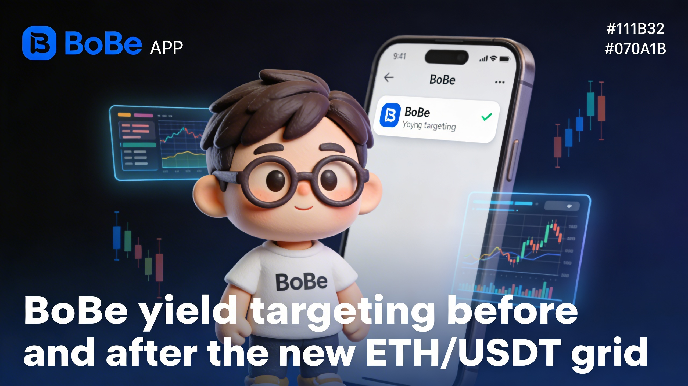
RU image
Sat
BoBe yield targeting before and after the new ETH/USDT grid bot
Our ETH/USDT grid bot is live, boosting yield targeting for all BoBe users. Transparency is key: see how automation can help manage risk. Learn more at bobe.app. #BoBeApp #DeFi #AutomatedTrading
194 chars
Наш grid bot для ETH/USDT запущен! Теперь возможности для повышения доходности доступны всем пользователям BoBe. Прозрачность прежде всего: убедитесь сами, как автоматизация помогает управлять рисками. Подробнее на bobe.app. #BoBeApp #DeFi #AutomatedTrading #Крипто #АвтоТрейдинг
279 chars
Excited to share some insights on BoBe yield targeting, before and after the ETH/USDT grid bot launch.
Our goal is to provide sustainable on-chain USDT yield, and the new bot helps us diversify strategies:
* Previously, our focus was primarily on BTC/USDT DCA.
* Now, ETH/USDT grid bots contribute, balancing risk/reward.
Remember, past performance isn't indicative of future results, but this diversification strengthens the platform.
What's your preferred asset to automate?
#BoBe #CryptoTrading #AutomatedTrading #DeFi
530 chars
Рады поделиться информацией о возможностях получения дохода на BoBe, до и после запуска ETH/USDT grid bot.
Наша цель - обеспечить устойчивую доходность в USDT в сети, и новый бот помогает нам диверсифицировать стратегии:
* Ранее мы в основном фокусировались на BTC/USDT DCA.
* Теперь ETH/USDT grid bot вносит свой вклад, балансируя риск и доходность.
Помните, прошлые результаты не гарантируют будущих, но эта диверсификация укрепляет платформу.
Какой актив вы предпочитаете автоматизировать?
#BoBe #CryptoTrading #AutomatedTrading #DeFi #КриптоБот #Доходность
565 chars
Pending review
RU image
Sun
Automated crypto strategies: are bots finally beating humans?
Tired of watching your portfolio bleed while "expert" traders flex on Twitter? Are automated crypto strategies finally outperforming emotional human traders? Let's explore.
The allure of beating the market is strong, but human traders often fall prey to fear and greed. Bots, programmed with logic, can execute strategies consistently, removing emotional impulses.
However, not all bots are created equal. Look for transparent strategies, backtested data, and adjustable risk parameters. Understand how the bot works, and don't blindly trust black boxes.
At BoBe, we focus on transparent, AI driven strategies like DCA and grid bots, deployed on-chain to generate USDT yield. You control your risk parameters and can see exactly how your capital is allocated.
Ready to explore automated strategies that take the emotion out of trading? Check out BoBe to learn more and get started: bobe.app #CryptoTrading #AutomatedTrading #DeFi
The allure of beating the market is strong, but human traders often fall prey to fear and greed. Bots, programmed with logic, can execute strategies consistently, removing emotional impulses.
However, not all bots are created equal. Look for transparent strategies, backtested data, and adjustable risk parameters. Understand how the bot works, and don't blindly trust black boxes.
At BoBe, we focus on transparent, AI driven strategies like DCA and grid bots, deployed on-chain to generate USDT yield. You control your risk parameters and can see exactly how your capital is allocated.
Ready to explore automated strategies that take the emotion out of trading? Check out BoBe to learn more and get started: bobe.app #CryptoTrading #AutomatedTrading #DeFi
953 chars
Устали смотреть, как ваш портфель истекает кровью, пока "эксперты" трейдеры красуются в Твиттере? Неужели автоматизированные крипто-стратегии наконец-то превосходят эмоциональных трейдеров? Давайте разберемся.
Соблазн обогнать рынок велик, но трейдеры-люди часто становятся жертвами страха и жадности. Боты, запрограммированные логикой, могут последовательно выполнять стратегии, исключая эмоциональные импульсы.
Однако, не все боты одинаково хороши. Ищите прозрачные стратегии, данные бэктестинга и настраиваемые параметры риска. Разберитесь, как работает бот, и не доверяйте слепо черным ящикам.
В BoBe мы ориентируемся на прозрачные, управляемые ИИ стратегии, такие как DCA и grid bot, развернутые в сети для получения дохода в USDT. Вы контролируете параметры риска и можете видеть, как именно распределяется ваш капитал.
Готовы изучить автоматизированные стратегии, которые исключают эмоции из торговли? Загляните на BoBe, чтобы узнать больше и начать работу: bobe.app #CryptoTrading #AutomatedTrading #DeFi #Крипто #АвтоТрейдинг
Соблазн обогнать рынок велик, но трейдеры-люди часто становятся жертвами страха и жадности. Боты, запрограммированные логикой, могут последовательно выполнять стратегии, исключая эмоциональные импульсы.
Однако, не все боты одинаково хороши. Ищите прозрачные стратегии, данные бэктестинга и настраиваемые параметры риска. Разберитесь, как работает бот, и не доверяйте слепо черным ящикам.
В BoBe мы ориентируемся на прозрачные, управляемые ИИ стратегии, такие как DCA и grid bot, развернутые в сети для получения дохода в USDT. Вы контролируете параметры риска и можете видеть, как именно распределяется ваш капитал.
Готовы изучить автоматизированные стратегии, которые исключают эмоции из торговли? Загляните на BoBe, чтобы узнать больше и начать работу: bobe.app #CryptoTrading #AutomatedTrading #DeFi #Крипто #АвтоТрейдинг
1050 chars
Are trading bots *finally* outperforming humans? It's a question we hear a lot.
While no strategy guarantees profit, automated tools offer key advantages:
* **No emotion:** Bots execute based on rules, avoiding impulsive decisions.
* **24/7 operation:** They never sleep, capturing opportunities around the clock.
* **Consistent execution:** Bots stick to the plan, something easily lost in manual trading.
Platforms like BoBe use AI-driven bots, automating strategies like DCA and grid trading to generate USDT yield, all on-chain.
Interested in exploring automated trading? What's your current strategy, and how's it working for you?
#DeFi #CryptoTrading #AutomatedTrading #BoBe
691 chars
Торговые боты *действительно* начинают обгонять людей? Этот вопрос мы слышим очень часто.
Хотя ни одна стратегия не гарантирует прибыль, автоматизированные инструменты предлагают ключевые преимущества:
* **Без эмоций:** Боты действуют на основе правил, избегая импульсивных решений.
* **Круглосуточная работа:** Они никогда не спят, улавливая возможности круглосуточно.
* **Последовательное выполнение:** Боты придерживаются плана, что легко упустить при ручной торговле.
Платформы, такие как BoBe, используют ботов на основе ИИ, автоматизируя такие стратегии, как DCA и grid-трейдинг, для получения доходности в USDT, и все это в сети.
Интересно попробовать автоматизированную торговлю? Какая у вас сейчас стратегия и насколько хорошо она работает?
#DeFi #CryptoTrading #AutomatedTrading #BoBe #Крипто #АвтоТрейдинг
827 chars
Pending review
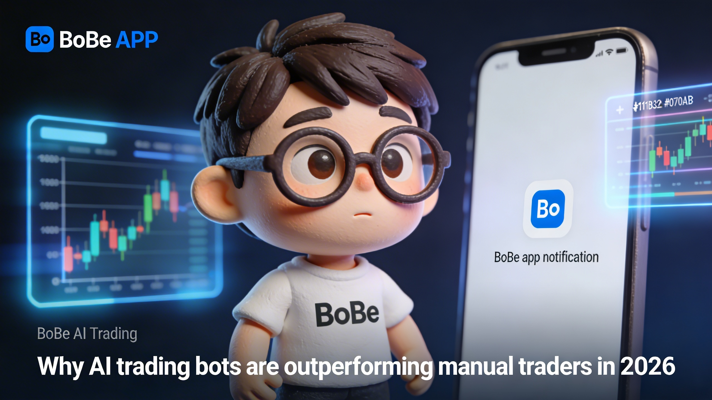
RU image
Tue
Why AI trading bots are outperforming manual traders in 2026
Staring at charts all day, still losing money? You're not alone. AI trading bots are increasingly outperforming manual traders. Here's why.
Emotions wreck trading. Fear, greed, FOMO: bots don't have them. They execute strategies based on data, not feelings, leading to more consistent results. Plus, AI can analyze far more data, far faster, than any human.
Backtesting is key. Bots can run millions of simulations to optimize strategies. This allows for adapting to changing market conditions, something difficult to do manually in real time.
BoBe uses AI-powered trading strategies, like DCA and grid bots, to automate your crypto trading. We focus on transparency and risk management, so you can earn yield with less stress.
Ready to trade smarter, not harder? Explore automated crypto strategies and start building your portfolio at bobe.app. #CryptoTrading #TradingBot #DeFi
Emotions wreck trading. Fear, greed, FOMO: bots don't have them. They execute strategies based on data, not feelings, leading to more consistent results. Plus, AI can analyze far more data, far faster, than any human.
Backtesting is key. Bots can run millions of simulations to optimize strategies. This allows for adapting to changing market conditions, something difficult to do manually in real time.
BoBe uses AI-powered trading strategies, like DCA and grid bots, to automate your crypto trading. We focus on transparency and risk management, so you can earn yield with less stress.
Ready to trade smarter, not harder? Explore automated crypto strategies and start building your portfolio at bobe.app. #CryptoTrading #TradingBot #DeFi
903 chars
Целый день смотришь на графики и все равно теряешь деньги? Ты не один такой. Торговые AI боты все чаще обгоняют обычных трейдеров. Вот почему.
Эмоции убивают торговлю. Страх, жадность, FOMO: у ботов их нет. Они выполняют стратегии на основе данных, а не чувств, что ведет к более стабильным результатам. Плюс, AI может анализировать гораздо больше данных, гораздо быстрее, чем любой человек.
Бэктестинг это наше все. Боты могут запускать миллионы симуляций для оптимизации стратегий. Это позволяет адаптироваться к меняющимся рыночным условиям, что сложно сделать вручную в реальном времени.
BoBe использует торговые стратегии на базе AI, такие как DCA и grid боты, чтобы автоматизировать твою крипто-торговлю. Мы ориентируемся на прозрачность и управление рисками, чтобы ты мог зарабатывать yield с меньшим стрессом.
Готов торговать умнее, а не усерднее? Изучи автоматизированные крипто-стратегии и начни строить свой портфель на bobe.app. #CryptoTrading #TradingBot #DeFi #Крипто #АвтоТрейдинг
Эмоции убивают торговлю. Страх, жадность, FOMO: у ботов их нет. Они выполняют стратегии на основе данных, а не чувств, что ведет к более стабильным результатам. Плюс, AI может анализировать гораздо больше данных, гораздо быстрее, чем любой человек.
Бэктестинг это наше все. Боты могут запускать миллионы симуляций для оптимизации стратегий. Это позволяет адаптироваться к меняющимся рыночным условиям, что сложно сделать вручную в реальном времени.
BoBe использует торговые стратегии на базе AI, такие как DCA и grid боты, чтобы автоматизировать твою крипто-торговлю. Мы ориентируемся на прозрачность и управление рисками, чтобы ты мог зарабатывать yield с меньшим стрессом.
Готов торговать умнее, а не усерднее? Изучи автоматизированные крипто-стратегии и начни строить свой портфель на bobe.app. #CryptoTrading #TradingBot #DeFi #Крипто #АвтоТрейдинг
1011 chars
Seeing a lot of talk about AI trading bots lately, and for good reason.
More and more traders are realizing the edge automation provides.
Why are bots doing so well right now? A few reasons:
* They remove emotion from trading.
* They can execute trades 24/7.
* They can analyze massive datasets faster than any human.
BoBe uses AI to power automated trading strategies, helping you generate on-chain USDT yield.
What's your current approach to navigating market volatility?
#DeFi #CryptoTrading #TradingBot #BoBeApp
527 chars
В последнее время много говорят о торговых AI ботах, и не зря.
Все больше и больше трейдеров осознают преимущество, которое дает автоматизация.
Почему боты так хорошо себя показывают сейчас? Несколько причин:
* Они убирают эмоции из торговли.
* Они могут совершать сделки 24/7.
* Они могут анализировать огромные объемы данных быстрее, чем любой человек.
BoBe использует AI для автоматизации торговых стратегий, помогая тебе получать доходность в USDT в сети.
А какой у тебя сейчас подход к навигации по волатильности рынка?
#DeFi #CryptoTrading #TradingBot #BoBeApp #Крипто #АвтоТрейдинг
597 chars
Pending review
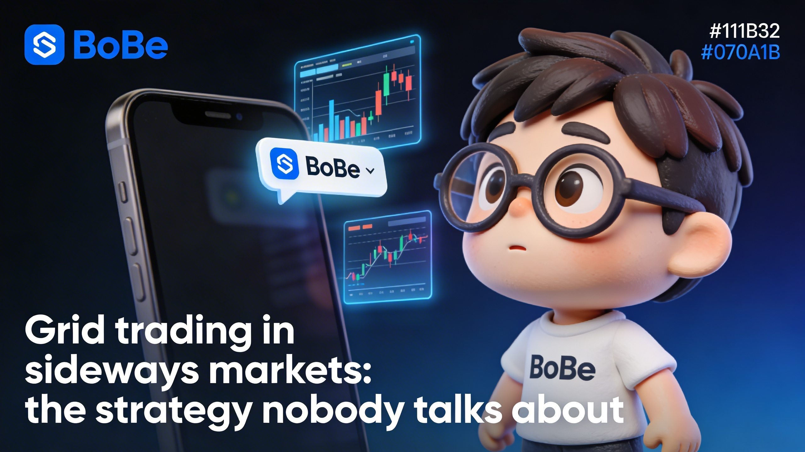
RU image
Thu
Grid trading in sideways markets: the strategy nobody talks about
Sideways markets got you down? They can be brutal, but there's a strategy many overlook: grid trading. Let's dive into how it works and why it's worth considering.
Grid trading profits from volatility within a defined range. The bot places buy orders below the current price and sell orders above. As the price fluctuates, it executes trades, accumulating small profits on each swing. Think "buy low, sell high," automatically.
This strategy excels in sideways markets where price action is choppy but relatively stable. Unlike trend-following strategies, grid trading doesn't rely on sustained upward or downward movement. It's about capturing those smaller, back-and-forth gains.
BoBe makes grid trading accessible. Our platform automates the setup and management of your grid, freeing you from constant monitoring. Define your range and let the bot do the work, all while your assets remain in your own wallet.
Want to explore grid trading in a sideways market? Check out BoBe's automated strategies and start earning USDT yield on your crypto. Learn more at bobe.app #DeFi #CryptoTrading #TradingBot #BoBeApp
Grid trading profits from volatility within a defined range. The bot places buy orders below the current price and sell orders above. As the price fluctuates, it executes trades, accumulating small profits on each swing. Think "buy low, sell high," automatically.
This strategy excels in sideways markets where price action is choppy but relatively stable. Unlike trend-following strategies, grid trading doesn't rely on sustained upward or downward movement. It's about capturing those smaller, back-and-forth gains.
BoBe makes grid trading accessible. Our platform automates the setup and management of your grid, freeing you from constant monitoring. Define your range and let the bot do the work, all while your assets remain in your own wallet.
Want to explore grid trading in a sideways market? Check out BoBe's automated strategies and start earning USDT yield on your crypto. Learn more at bobe.app #DeFi #CryptoTrading #TradingBot #BoBeApp
1136 chars
Застряли на боковике? Это может быть тяжело, но есть стратегия, которую многие упускают из виду: grid trading. Давайте разберемся, как это работает и почему стоит ее рассмотреть.
#DeFi #Крипто #АвтоТрейдинг
Grid trading зарабатывает на волатильности в определенном диапазоне. Бот размещает ордера на покупку ниже текущей цены и ордера на продажу выше. По мере колебания цены он совершает сделки, накапливая небольшую прибыль на каждом движении. Представьте себе "покупай дешево, продавай дорого", только автоматически. #КриптоБот #BoBe
Эта стратегия отлично работает на боковых рынках, где движение цены нестабильно, но относительно стабильно. В отличие от стратегий следования за трендом, grid trading не полагается на устойчивое восходящее или нисходящее движение. Речь идет о получении небольшой прибыли от движений туда-сюда. #Доходность #USDT
BoBe делает grid trading доступным. Наша платформа автоматизирует настройку и управление вашей сеткой, освобождая вас от постоянного мониторинга. Определите свой диапазон и позвольте боту выполнять работу, пока ваши активы остаются в вашем собственном кошельке. #КриптоТрейдинг #bobeapp
Хотите изучить grid trading на боковом рынке? Ознакомьтесь с автоматизированными стратегиями BoBe и начните получать доход в USDT на своей криптовалюте. Узнайте больше на bobe.app #DeFi #CryptoTrading #TradingBot #BoBeApp #Крипто #АвтоТрейдинг
Grid trading зарабатывает на волатильности в определенном диапазоне. Бот размещает ордера на покупку ниже текущей цены и ордера на продажу выше. По мере колебания цены он совершает сделки, накапливая небольшую прибыль на каждом движении. Представьте себе "покупай дешево, продавай дорого", только автоматически. #КриптоБот #BoBe
Эта стратегия отлично работает на боковых рынках, где движение цены нестабильно, но относительно стабильно. В отличие от стратегий следования за трендом, grid trading не полагается на устойчивое восходящее или нисходящее движение. Речь идет о получении небольшой прибыли от движений туда-сюда. #Доходность #USDT
BoBe делает grid trading доступным. Наша платформа автоматизирует настройку и управление вашей сеткой, освобождая вас от постоянного мониторинга. Определите свой диапазон и позвольте боту выполнять работу, пока ваши активы остаются в вашем собственном кошельке. #КриптоТрейдинг #bobeapp
Хотите изучить grid trading на боковом рынке? Ознакомьтесь с автоматизированными стратегиями BoBe и начните получать доход в USDT на своей криптовалюте. Узнайте больше на bobe.app #DeFi #CryptoTrading #TradingBot #BoBeApp #Крипто #АвтоТрейдинг
1398 chars
Sideways markets got you down?
Most people only talk about longing or shorting, but there's another way: grid trading.
It shines when prices move sideways, chopping around within a range.
* Sets buy and sell orders at pre-defined intervals
* Automatically buys low, sells high, within that range
* A consistent way to generate yield in stable markets
BoBe offers automated grid bots, so you can execute this strategy hands-free.
What's your current strategy for sideways markets?
#CryptoTrading #TradingBot #BoBe #DeFi
530 chars
Застряли на боковике?
Большинство людей говорят только о лонгах или шортах, но есть и другой способ: grid trading.
Он отлично работает, когда цены движутся вбок, хаотично перемещаясь в пределах диапазона.
* Размещает ордера на покупку и продажу с предопределенными интервалами
* Автоматически покупает дешево, продает дорого, в пределах этого диапазона
* Постоянный способ получения дохода на стабильных рынках
BoBe предлагает автоматизированных grid ботов, поэтому вы можете выполнять эту стратегию в автоматическом режиме.
Какая у вас сейчас стратегия для боковых рынков?
#CryptoTrading #TradingBot #BoBe #DeFi #Крипто #АвтоТрейдинг
646 chars
Pending review
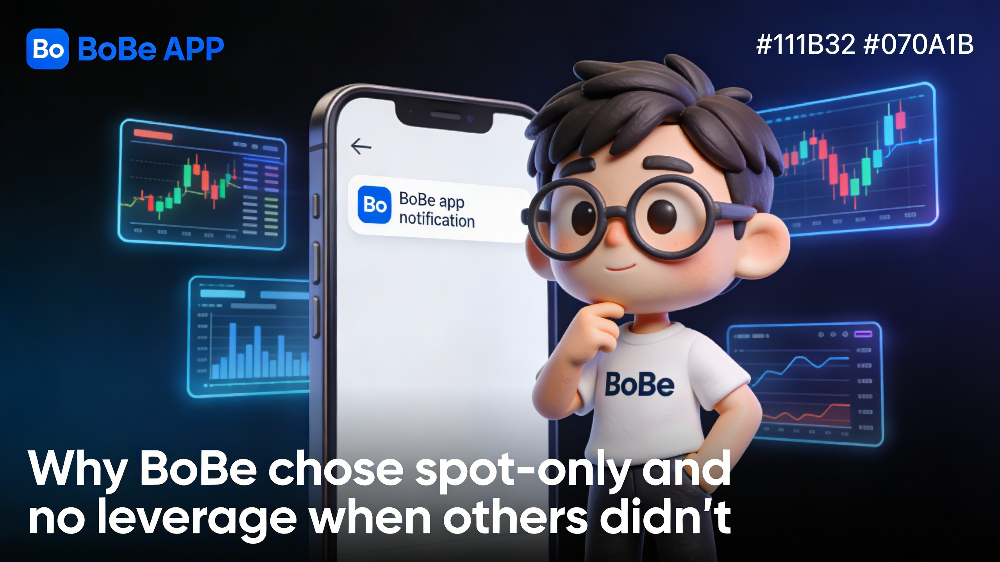
RU image
Fri
Why BoBe chose spot-only and no leverage when others didn't
Tired of seeing crypto platforms pushing high leverage with zero warning? You're not alone. Many chase quick gains, but at what cost?
Leverage amplifies both wins AND losses. A small market dip can wipe you out, even if your overall strategy is solid. It's a risky game, especially in crypto's volatility. Liquidation is a real possibility.
Spot trading, on the other hand, only uses the capital you have. No debt, no margin calls, just straightforward buying and selling. Less potential upside, sure, but WAY less risk of catastrophic loss.
That's why BoBe focuses on spot-only trading. Our AI-driven bots use DCA and grid strategies to generate yield, minimizing risk while automating your crypto journey. We prioritize sustainable growth.
Want a more balanced approach to crypto trading? Explore automated spot strategies with BoBe: bobe.app #DeFi #CryptoTrading #AutomatedTrading
Leverage amplifies both wins AND losses. A small market dip can wipe you out, even if your overall strategy is solid. It's a risky game, especially in crypto's volatility. Liquidation is a real possibility.
Spot trading, on the other hand, only uses the capital you have. No debt, no margin calls, just straightforward buying and selling. Less potential upside, sure, but WAY less risk of catastrophic loss.
That's why BoBe focuses on spot-only trading. Our AI-driven bots use DCA and grid strategies to generate yield, minimizing risk while automating your crypto journey. We prioritize sustainable growth.
Want a more balanced approach to crypto trading? Explore automated spot strategies with BoBe: bobe.app #DeFi #CryptoTrading #AutomatedTrading
907 chars
Устали видеть, как криптоплатформы продвигают высокое кредитное плечо без предупреждений? Вы не одиноки. Многие гонятся за быстрой прибылью, но какой ценой?
Кредитное плечо увеличивает как выигрыши, ТАК и проигрыши. Небольшое падение рынка может уничтожить вас, даже если ваша общая стратегия надежна. Это рискованная игра, особенно в условиях волатильности криптовалюты. Ликвидация вполне реальна.
Спотовая торговля, с другой стороны, использует только имеющийся у вас капитал. Никаких долгов, никаких маржин-коллов, просто прямая покупка и продажа. Меньше потенциального дохода, конечно, но ГОРАЗДО меньше риска катастрофических потерь.
Вот почему BoBe фокусируется только на спотовой торговле. Наши боты на основе AI используют стратегии DCA и grid, чтобы генерировать доход, минимизируя риск и автоматизируя ваше крипто-путешествие. Мы уделяем приоритетное внимание устойчивому росту.
Хотите более сбалансированный подход к криптотрейдингу? Изучите автоматизированные спотовые стратегии с BoBe: bobe.app #DeFi #CryptoTrading #AutomatedTrading #Крипто #АвтоТрейдинг
Кредитное плечо увеличивает как выигрыши, ТАК и проигрыши. Небольшое падение рынка может уничтожить вас, даже если ваша общая стратегия надежна. Это рискованная игра, особенно в условиях волатильности криптовалюты. Ликвидация вполне реальна.
Спотовая торговля, с другой стороны, использует только имеющийся у вас капитал. Никаких долгов, никаких маржин-коллов, просто прямая покупка и продажа. Меньше потенциального дохода, конечно, но ГОРАЗДО меньше риска катастрофических потерь.
Вот почему BoBe фокусируется только на спотовой торговле. Наши боты на основе AI используют стратегии DCA и grid, чтобы генерировать доход, минимизируя риск и автоматизируя ваше крипто-путешествие. Мы уделяем приоритетное внимание устойчивому росту.
Хотите более сбалансированный подход к криптотрейдингу? Изучите автоматизированные спотовые стратегии с BoBe: bobe.app #DeFi #CryptoTrading #AutomatedTrading #Крипто #АвтоТрейдинг
1084 chars
Why spot-only, no leverage? Good question.
Many platforms offer high leverage, tempting returns, but we chose a different path for BoBe.
Here's why:
* Risk Management: Leverage amplifies both gains and losses. We prioritize protecting your capital.
* Transparency: Spot trading is straightforward. You see exactly what you're buying, and selling, without complex margin calculations.
* Sustainable Growth: Spot trading, while potentially slower, is a more reliable way to build your portfolio over time.
We believe automation should simplify trading, not gamble with your assets.
What's your take on leverage?
#BoBe #CryptoTrading #AutomatedTrading #DeFi
668 chars
Почему только спотовая торговля, без кредитного плеча? Хороший вопрос.
Многие платформы предлагают высокое кредитное плечо, соблазнительную прибыль, но мы выбрали другой путь для BoBe.
Вот почему:
* Управление рисками: Кредитное плечо увеличивает как прибыль, так и убытки. Мы уделяем приоритетное внимание защите вашего капитала.
* Прозрачность: Спотовая торговля проста. Вы видите именно то, что покупаете и продаете, без сложных маржинальных расчетов.
* Устойчивый рост: Спотовая торговля, хотя и может быть медленнее, является более надежным способом построения вашего портфеля с течением времени.
Мы считаем, что автоматизация должна упрощать торговлю, а не рисковать вашими активами.
А что вы думаете о кредитном плече?
#BoBe #CryptoTrading #AutomatedTrading #DeFi
778 chars
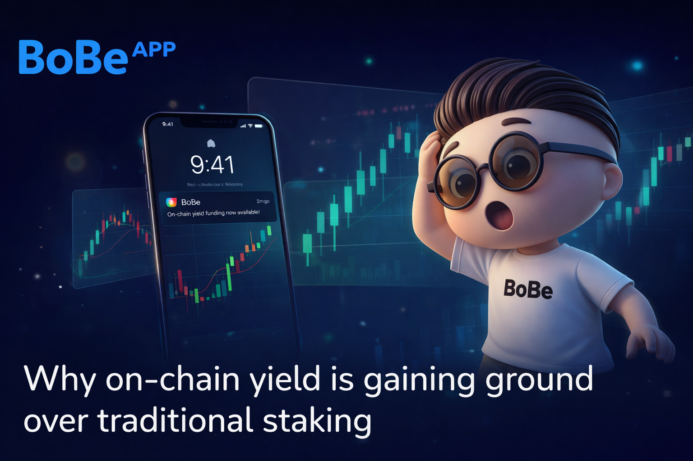
Pending review
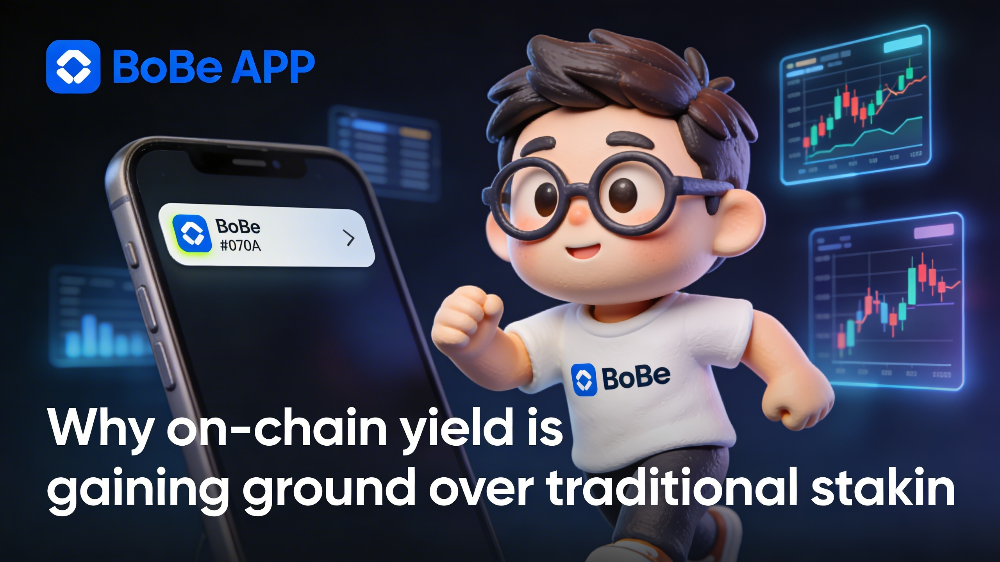
RU image
Sat
Why on-chain yield is gaining ground over traditional staking
Tired of complex staking procedures and centralized platforms holding your crypto? You're not alone. On-chain yield is emerging as a compelling alternative.
What's the difference? Traditional staking often involves locking your tokens on exchanges. On-chain yield strategies, like those used on DeFi, keep your assets in your control. This means you retain custody and transparency.
On-chain yield offers potential advantages: greater control over your assets, direct participation in DeFi protocols, and composability, meaning your yield-generating strategies can interact with other DeFi applications.
BoBe uses on-chain yield strategies, like automated DCA and grid bots, to generate USDT yield. We prioritize transparency, showing you exactly how your funds are being utilized and potential returns. No black boxes here.
Explore automated on-chain yield strategies with BoBe: effortlessly grow your USDT holdings while maintaining control. Start exploring at bobe.app. #DeFi #CryptoYield #AutomatedTrading
What's the difference? Traditional staking often involves locking your tokens on exchanges. On-chain yield strategies, like those used on DeFi, keep your assets in your control. This means you retain custody and transparency.
On-chain yield offers potential advantages: greater control over your assets, direct participation in DeFi protocols, and composability, meaning your yield-generating strategies can interact with other DeFi applications.
BoBe uses on-chain yield strategies, like automated DCA and grid bots, to generate USDT yield. We prioritize transparency, showing you exactly how your funds are being utilized and potential returns. No black boxes here.
Explore automated on-chain yield strategies with BoBe: effortlessly grow your USDT holdings while maintaining control. Start exploring at bobe.app. #DeFi #CryptoYield #AutomatedTrading
1033 chars
Устали от сложных процедур стейкинга и централизованных платформ, удерживающих вашу крипту? Вы не одиноки. On-chain yield становится привлекательной альтернативой.
В чем разница? Традиционный стейкинг часто включает блокировку ваших токенов на биржах. On-chain yield стратегии, такие как те, что используются в DeFi, сохраняют ваши активы под вашим контролем. Это означает, что вы сохраняете право собственности и прозрачность.
On-chain yield предлагает потенциальные преимущества: больший контроль над вашими активами, прямое участие в DeFi протоколах и компонуемость, что означает, что ваши стратегии генерации доходности могут взаимодействовать с другими DeFi приложениями.
BoBe использует on-chain yield стратегии, такие как автоматизированный DCA и grid bot, для генерации USDT yield. Мы уделяем приоритетное внимание прозрачности, показывая вам, как именно используются ваши средства и каковы потенциальные доходы. Никаких черных ящиков здесь.
Изучите автоматизированные on-chain yield стратегии с BoBe: легко увеличивайте свои USDT активы, сохраняя при этом контроль. Начните изучение на bobe.app. #DeFi #CryptoYield #AutomatedTrading #Крипто #АвтоТрейдинг
В чем разница? Традиционный стейкинг часто включает блокировку ваших токенов на биржах. On-chain yield стратегии, такие как те, что используются в DeFi, сохраняют ваши активы под вашим контролем. Это означает, что вы сохраняете право собственности и прозрачность.
On-chain yield предлагает потенциальные преимущества: больший контроль над вашими активами, прямое участие в DeFi протоколах и компонуемость, что означает, что ваши стратегии генерации доходности могут взаимодействовать с другими DeFi приложениями.
BoBe использует on-chain yield стратегии, такие как автоматизированный DCA и grid bot, для генерации USDT yield. Мы уделяем приоритетное внимание прозрачности, показывая вам, как именно используются ваши средства и каковы потенциальные доходы. Никаких черных ящиков здесь.
Изучите автоматизированные on-chain yield стратегии с BoBe: легко увеличивайте свои USDT активы, сохраняя при этом контроль. Начните изучение на bobe.app. #DeFi #CryptoYield #AutomatedTrading #Крипто #АвтоТрейдинг
1179 chars
On-chain yield is becoming a popular alternative to traditional staking, and here's why:
* More control: Your assets stay in your wallet.
* Transparency: See exactly where your yield comes from.
* Composability: Integrates with other DeFi protocols.
BoBe helps you tap into on-chain yield through automated trading strategies, like DCA and grid bots. These strategies generate USDT yield, transparently and automatically.
What's your preferred method for generating yield?
#DeFi #CryptoYield #AutomatedTrading #BoBe
525 chars
On-chain yield становится популярной альтернативой традиционному стейкингу, и вот почему:
* Больше контроля: Ваши активы остаются в вашем кошельке.
* Прозрачность: Видите, откуда именно поступает ваш доход.
* Компонуемость: Интегрируется с другими DeFi протоколами.
BoBe помогает вам получить доступ к on-chain yield с помощью автоматизированных торговых стратегий, таких как DCA и grid bot. Эти стратегии генерируют USDT yield прозрачно и автоматически.
Какой способ генерации дохода вы предпочитаете?
#DeFi #CryptoYield #AutomatedTrading #BoBe #Крипто #Доходность
569 chars
Pending review
RU image
Wed
How we built the ETH/USDT grid bot yield range
Wondering how we set the ETH/USDT grid bot yield range? It's based on historical volatility, aiming for consistent on-chain USDT yield, not unrealistic APY. Learn more at bobe.app #BoBe #CryptoTrading #TradingBot
212 chars
Интересно, как мы определяем диапазон доходности для нашего grid bot ETH/USDT? Всё на основе исторической волатильности, чтобы достичь стабильной доходности в USDT на блокчейне, а не гнаться за нереалистичными APY. Узнайте больше на bobe.app #BoBe #CryptoTrading #TradingBot #Крипто #АвтоТрейдинг
296 chars
Let's talk about how we set the yield range for our ETH/USDT grid bot:
We analyze historical price volatility to identify optimal upper and lower price points.
* This helps the bot capture profit from ETH price swings.
* We backtest using historical data to simulate performance.
* The goal is consistent, on-chain USDT yield.
Remember, past performance isn't indicative of future results. Risk management is key.
What parameters do *you* consider when evaluating a trading bot's range?
#DeFi #CryptoTrading #TradingBot #BoBe
536 chars
Давайте поговорим о том, как мы определяем диапазон доходности для нашего grid bot ETH/USDT:
Мы анализируем историческую волатильность цены, чтобы определить оптимальные верхние и нижние ценовые точки.
* Это помогает боту получать прибыль от колебаний цены ETH.
* Мы проводим бэктестирование, используя исторические данные, чтобы смоделировать производительность.
* Наша цель - стабильная доходность в USDT на блокчейне.
Помните, что прошлые результаты не являются гарантией будущих. Управление рисками – это самое главное.
Какие параметры *вы* учитываете при оценке диапазона торгового бота?
#DeFi #CryptoTrading #TradingBot #BoBe #Крипто #АвтоТрейдинг
658 chars
Pending review
RU image
Tue
What BoBe's new ETH/USDT grid bot means for your yield
Our new ETH/USDT grid bot is live, providing automated on-chain USDT yield. Manage risk, automate your trades, and explore the potential of #DeFi with #BoBe. Learn more at bobe.app #CryptoTrading #TradingBot
207 chars
Наш новый grid bot ETH/USDT уже запущен! Автоматизируй получение USDT прямо в сети. Управляй рисками, автоматизируй торговлю и открой для себя мир #DeFi с #BoBe. Узнай больше на bobe.app #CryptoTrading #TradingBot #Крипто #АвтоТрейдинг
235 chars
Excited to announce our new ETH/USDT grid bot is live on BoBe!
What does this mean for your potential yield?
* Grid bots automate buy and sell orders within a price range.
* This allows you to capture small profits from ETH price fluctuations.
* The bot manages the trades, freeing you from constant monitoring.
Remember, crypto trading involves risk. Grid bots can help manage that risk, but aren't a magic bullet.
What's your current strategy for earning yield on your ETH?
#BoBe #CryptoTrading #AutomatedTrading #CryptoYield
538 chars
Рады сообщить, что наш новый grid bot ETH/USDT запущен на BoBe!
Что это значит для твоей потенциальной доходности?
* Grid bot автоматизирует ордера на покупку и продажу в заданном ценовом диапазоне.
* Это позволяет получать небольшую прибыль от колебаний цены ETH.
* Бот управляет сделками, освобождая тебя от постоянного мониторинга.
Помни, торговля криптовалютой сопряжена с риском. Grid bot может помочь управлять этим риском, но это не волшебная палочка.
А какая у тебя стратегия для получения дохода на ETH?
#BoBe #CryptoTrading #AutomatedTrading #CryptoYield #Крипто #Доходность #КриптоБот
600 chars
Pending review
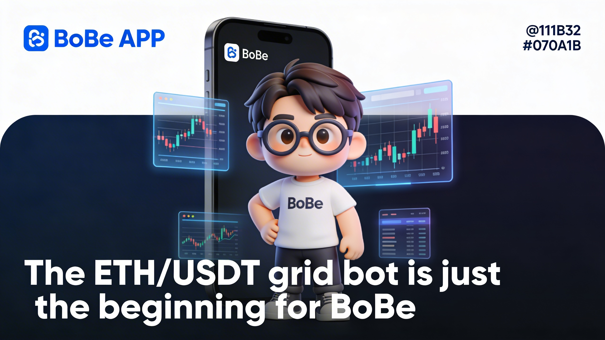
RU image
Sun
The ETH/USDT grid bot is just the beginning for BoBe
Our ETH/USDT grid bot is live, but it's just the beginning. BoBe is building more transparent, automated strategies to generate on-chain USDT yield. Explore the future of trading: bobe.app #DeFi #CryptoTrading #BoBeApp
218 chars
Наш grid bot ETH/USDT запущен, но это только начало! BoBe разрабатывает больше прозрачных и автоматизированных стратегий для получения USDT доходности в сети. Откройте для себя будущее трейдинга: bobe.app #DeFi #CryptoTrading #BoBeApp #Крипто #АвтоТрейдинг
256 chars
Our ETH/USDT grid bot is live, but it's only the first step for BoBe.
We're building a suite of automated strategies, designed to navigate different market conditions. Think of it as diversification, but within the platform itself.
Future bots will explore:
* Different trading pairs
* Varied risk profiles
* Advanced AI driven parameters
We want BoBe to be your go-to for hands-free USDT yield generation in DeFi. What other trading pairs are you most interested in seeing supported?
#BoBe #AutomatedTrading #DeFi #CryptoTrading
539 chars
Наш grid bot ETH/USDT запущен, но это только первый шаг для BoBe.
Мы разрабатываем набор автоматизированных стратегий, предназначенных для навигации в различных рыночных условиях. Представьте себе это как диверсификацию, но внутри самой платформы.
Будущие боты будут исследовать:
* Разные торговые пары
* Различные профили риска
* Продвинутые параметры, управляемые AI
Мы хотим, чтобы BoBe стал вашим надежным инструментом для автоматической генерации USDT доходности в DeFi. Какие другие торговые пары вам больше всего интересно увидеть в поддержке?
#BoBe #AutomatedTrading #DeFi #CryptoTrading #Крипто #Доходность
619 chars
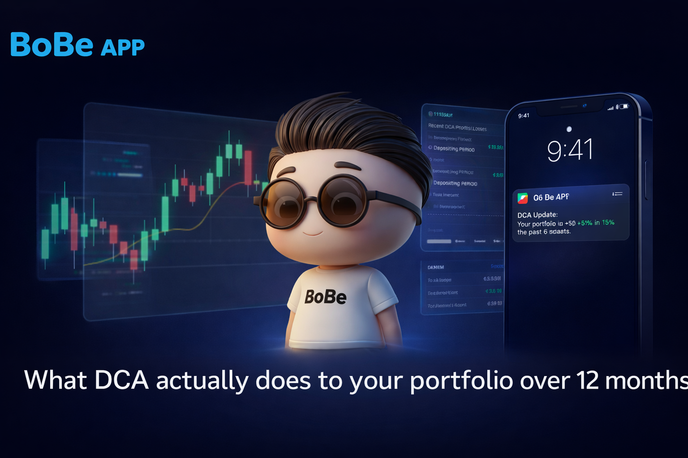
Pending review
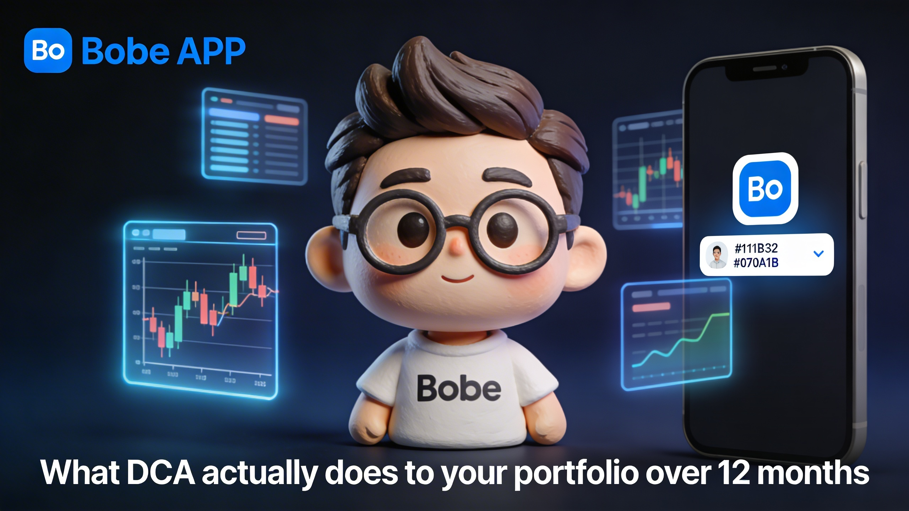
RU image
Wed
What DCA actually does to your portfolio over 12 months
Tired of watching your portfolio swing wildly? Dollar-cost averaging, or DCA, can smooth out those rollercoaster rides. But what does it *actually* do over a year? Let's break it down.
DCA means investing a fixed dollar amount at regular intervals, regardless of the price. When prices are low, you buy more. When prices are high, you buy less. It's about consistency, not timing the market.
Think of it like this: you're averaging your purchase price over time. This reduces the impact of big price drops, especially if you're in it for the long haul. It's a strategy for managing risk, not getting rich quick.
BoBe automates DCA, so you can set it and forget it. No more emotional buying or selling. Just consistent, hands-free investing according to your risk profile.
Ready to take the emotion out of your crypto strategy? Explore automated DCA and other trading bots at bobe.app. #DeFi #AutomatedTrading #BoBeApp
DCA means investing a fixed dollar amount at regular intervals, regardless of the price. When prices are low, you buy more. When prices are high, you buy less. It's about consistency, not timing the market.
Think of it like this: you're averaging your purchase price over time. This reduces the impact of big price drops, especially if you're in it for the long haul. It's a strategy for managing risk, not getting rich quick.
BoBe automates DCA, so you can set it and forget it. No more emotional buying or selling. Just consistent, hands-free investing according to your risk profile.
Ready to take the emotion out of your crypto strategy? Explore automated DCA and other trading bots at bobe.app. #DeFi #AutomatedTrading #BoBeApp
941 chars
Нет контента для Twitter
DCA: A long-term friend in a volatile market.
Dollar-Cost Averaging smooths out your entry price by buying at regular intervals, regardless of the current price.
Here's what that can look like over 12 months:
* Reduces the impact of big price swings, especially downwards.
* Removes the stress of timing the market perfectly, because let's face it, nobody can.
* Potentially increases your overall returns compared to a single lump-sum purchase.
BoBe offers automated DCA strategies, so you can set it and forget it.
What's your preferred method for navigating market volatility?
#DeFi #CryptoTrading #BoBeApp #AutomatedTrading
639 chars
Нет контента для Telegram